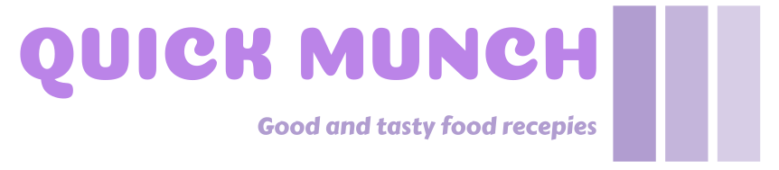

About
Welcome to our recipe website, where you can discover a vast collection of mouth-watering recipes from around the world! Our website is designed to cater to the needs of all cooking enthusiasts, whether you're a seasoned pro or just getting started in the kitchen.
We pride ourselves on our user-friendly interface, making it easy to navigate and find the recipe you're looking for.
Our website is regularly updated with new recipes, ensuring that you never run out of inspiration for your next meal.
Each recipe on our website is carefully curated by our team of expert chefs and food bloggers. We understand the importance of quality ingredients and simple, easy-to-follow instructions, which is why we strive to provide our users with the best recipes and cooking tips available.
Whether you're looking for healthy meal options, easy weeknight dinners, or something special for a special occasion, our recipe website has got you covered. So why not explore our delicious selection of recipes and start cooking up a storm today!